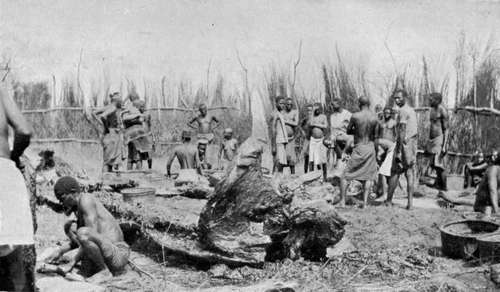

Hunting Elephant And Other Game. Part 4
Description
This section is from the book "Wild Life In Central Africa", by Denis D. Lyell. Also available from Amazon: Wild Life in Central Africa.
Hunting Elephant And Other Game. Part 4
Not very far from my dead elephant was the dried-up skull of a large bull shot by an officer who once lived at Fort Manning, and Kamwendo told me the tusks were as heavy as the one I had just got. I measured the depth of the brain cavity and found it to be exactly a foot. In my " Nyasaland for the Hunter and Settler" I gave two sketches of the cavity in an elephant's head, one sketch being by my friend Mr. Martin Ryan, and the other by myself. It shows how small a mark it is, and also how difficult a one, as it is buried in the centre of a mass of bone and flesh.
The feet of my elephant measured 56m., and he was a tall, large-bodied animal, but, owing to the kneeling position in which he fell, it was impossible to get his height measurement. The three largest elephants I have shot have all fallen in this kneeling position, and it is not uncommon for elephants to do so; although I think they usually fall flat on one side or the other. Perhaps animals generally fall on the wounded side, although small antelopes are often carried over by the force of the bullet. I think, when they run some way before falling, that they usually fall on the side that the bullet enters. I have heard it remarked that it is easier to kill an elephant from the right as it is stated that his heart lies more to that side than on the left. This, however, I consider a fallacy, as the heart is placed almost centrally in the cavity of the body. If an elephant should be cut up to examine the position of the heart and lungs, they naturally, by the force of gravitation, sink with their weight towards the side nearest the ground.
There can be little doubt that the elephants in Nyasaland and Northern Rhodesia are probably as large as any breed of elephants in Africa, with regard to their height and weight, for the late Mr. A. H. Neumann has written in his " Elephant Hunting in East Equatorial Africa" that the largest bull out of many he measured gave a height of 10ft. 9in. at the shoulder.
The ivory in Equatorial Africa is not usually of such fine quality, as it is found farther south, although the best bulls have much heavier and longer tusks.
After the elephant fell I took several photographs, and then we cut off the tail and went back to the village. As we got near, the villagers noticed the tail, and they began to shout to one another that an elephant was dead, and I have no doubt the following day's work of cutting-up was looked on as a sort of local outing.
My only regret was that the elephant had not two sound tusks, but when I got glimpses of him before shooting I could only see the side with the long tusk, so I naturally thought that he would have another on the opposite side. Elephant shooting is certainly full of luck, and I was sorry that the fine elephant I had seen the previous day had not given me a better chance to shoot him, as his tusks were much finer than this elephant's, and, moreover, he had two perfect ones.
The elephant was left untended that night, and early next morning I changed my camp to the carcass, as there was water in the big dambo near.
In the night the hyaenas had arrived on the scene and eaten about half the trunk, and they must have been very pleased to find such a quantity of fine meat waiting to be devoured. Before pitching the tent I took care to get to the windward side of the elephant, as I knew from past experience that there would soon be a strong aroma about; but at this time of year the wind is very changeable, as the great heat causes eddies in the air, so I could not get away from the stench, which kept coming round at every slight change of the wind.
The first thing I did was to make a large grass fence round the carcass, which gained me another native name, as the natives immediately christened me " Kampanda," the fence-maker. I also made a rough covering over the tent, and it was about 3 p.m. when all this work was completed, at which we had all worked hard. Then I got men on to the work of chopping out the tusks, while others began to hack up the body.
Before I had any experience of strong animal smells, the worst effluvia I can remember was that of the whalers which used to return to Dundee from the Arctic regions, and they certainly had a strong smell, but nothing compared to a putrefying elephant under a tropical sun. However, one can become accustomed almost to anything in this world. I once shot three hippo in the Lupata Gorge of the Zambesi River and carried most of the skin to Chinde under some boxes, and elephant tusks wrapped in canvas.
This skin got wet in the bilge water, and what with the dampness and heat it putrefied rapidly, and when I got to Chinde the people there informed me I was polluting the atmosphere, so I sent the skin to a sandbank some distance away, and it was given to the fishes. When my elephant tusks, in their canvas wrapping, were deposited in the African Lakes Corporation store, there was an instant use of handkerchiefs by the employees, and I was asked if I did not think it horrible. All I could reply was that I had been sleeping every night for over a week in very close proximity to a much worse smell, and surely the slight aroma of the canvas sacking was a very meagre odour and not worth worrying about.
Fence Round A Dead Elephant. (Cutting-up Scene.)
When the sun began to sink low I took my rifle and went for a lonely stroll down the dambo, but the only game I saw were two reedbuck which cleared off quickly.
On getting back to the elephant the stomach had just been opened, and the bad air and a lot of filth came out with a series of shrieks, for all the world just like a boiler letting off steam in jerks.
Some of the natives had cut themselves, and I had the pleasure of bandaging some bad gashes. If a native cuts himself when cutting up game he will often rub the injury with fresh dung, and they often put cowdung on bad sores and ulcers. The consequence is that, instead of doing them any good, they make their sores much worse, and I have seen some ugly ulcers simply caused by carelessness in not keeping the first injuries clean and covered.
Continue to:
- prev: Hunting Elephant And Other Game. Part 3
- Table of Contents
- next: Hunting Elephant And Other Game. Part 5